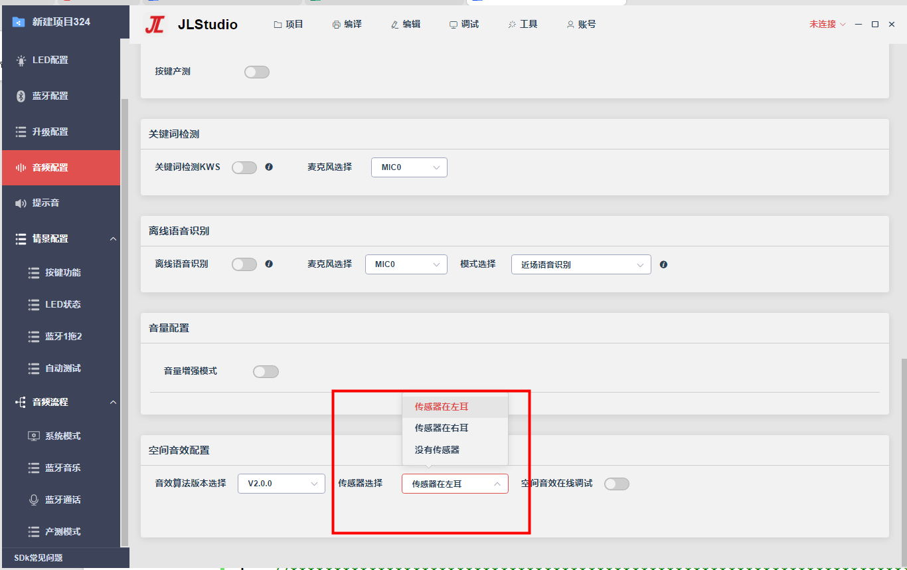
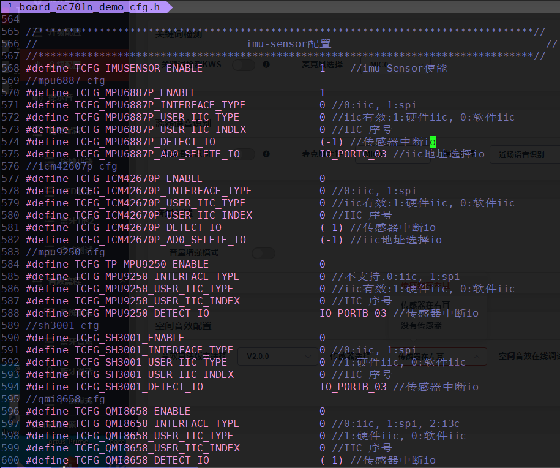
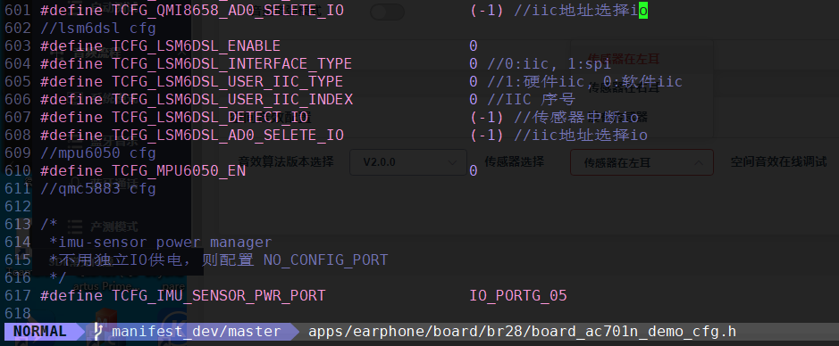

14.40. 空间音效
14.40.1. 功能介绍
空间音频是在杜比全景声的基础上进行算法优化，利用陀螺仪增加摆头时的声向。在空间音频中，虚拟声场提供了比立体声宽广得多、也丰富得多的细节。因此，空间音频的意义不仅在于歌曲听起来更加立体环绕，还在于使音乐给人的感觉更像是身临音乐现场，声音环绕在四周，营造一种现场演唱会的感觉。在空间音频的音乐播放中，声音可以随用户动作的变化而变化，带来真正的沉浸式体验。
固定头部模式：即仅仅有空间感的音效，不会跟踪头部动态。
头部跟踪模式：头部跟踪是在空间音频的基础上，增加了动态头部追踪技术。通过跟踪头部动作，音效也随之对应变化，使得空间音频的体验更加丰富。
14.40.2. 配置说明
14.40.2.1. 只需要固定头部模式
只需要头部跟踪的情况下，不需要开传感器
（1）选择传感器选择：没有传感器

（2）在蓝牙音乐流程图的解码节点后面添加空间音效节点

注意：tws的时候，加了空间音效节点，空间音效节点前面的数据流会跑双声道处理，在解码节点后面接空间音效节点数据流运算量最少
14.40.2.2. 需要头部跟踪模式
头部跟踪模式需要陀螺仪传感器的配合，所有需要在固定头部模式配置的情况下，打开传感器配置
（1）配置传感器选择
TWS耳机的时候，头部跟踪只需要用一个耳机陀螺仪的数据，所有需要选择使用左耳的传感器还是右耳的传感器
头戴式立体声选择传感器在左耳和传感器在右耳都可以，但是不能选择没有传感器

（2）配置IIC引脚
程序支持使用软件IIC接口读取传感器，在board_ac701n_demo_cfg.h文件配置引脚

（3）选择传感器型号 目前支持的陀螺仪传感器型号有：MPU6887P、ICM42670P、QMI8658、LSM6DSL、_MPU6050
a、使能传感器TCFG_IMUSENSOR_ENABLE
b、使能对应的传感器，只能使能一个传感器，不可以同时使能多个传感器
c、配置AD0_SELETE_IO引脚，没有时配置NO_CONFIG_PORT
d、配置TCFG_IMU_SENSOR_PWR_PORT传感器供电引脚，没有时配置NO_CONFIG_PORT
 
14.40.3. 参数说明
（1）头部跟踪参数
Track Sensitivity : 头部跟踪灵敏度，表示角度更新的快慢，处理突然转头声音产生突变
Angle Reset Sensitivity : 静止角度复位灵敏度，表示静止时间后，角度复位过程的快慢，处理立刻复位角度，声音突变的情况
（2）V1.0.0音效算法参数
trackKIND : 角度合成算法选择
ReverbKIND : 混响算法选择
reverbance : 湿声比例
dampingval : 高频decay
（2）V2.0.0音效算法参数
Radius : 声源半径，调节声音远近的效果
Bias Angle : 偏角，调节声像。设置0°或180°表示音源重合在正前方，经过算法，左右声道融合较多，分离度降低，增大该值（1°~90°），左右声道差异越明显，分离度也逐步提高